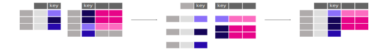

Pandas包介绍#
Pandas是一个开源数据分析和数据处理的Python库。它提供了大量便捷的数据结构和数据分析工具，是Python编程语言中用于数据挖掘和数据分析的重要工具之一。
DataFrame#
DataFrame是pandas库中的一种二维标签化数据结构，类似于Excel 的表格或SQL数据库中的表。它是数据分析和处理的基础单元，能够存储多种类型的数据，并提供丰富的函数和方法进行数据操作。

DataFrame的每一列则是一个Series，同样提供了丰富的函数和方法进行数据操作

import pandas as pd
df = pd.DataFrame(
{
"Name": [
"Braund, Mr. Owen Harris",
"Allen, Mr. William Henry",
"Bonnell, Miss. Elizabeth",
],
"Age": [22, 35, 58],
"Sex": ["male", "male", "female"],
}
)
print(df)
print()
print(df["Age"])
print()
print(df["Age"].max())
Name Age Sex
0 Braund, Mr. Owen Harris 22 male
1 Allen, Mr. William Henry 35 male
2 Bonnell, Miss. Elizabeth 58 female
0 22
1 35
2 58
Name: Age, dtype: int64
58
import pandas as pd
df = pd.DataFrame(
{
"Name": [
"Braund, Mr. Owen Harris",
"Allen, Mr. William Henry",
"Bonnell, Miss. Elizabeth",
],
"Age": [22, 35, 58],
"Sex": ["male", "male", "female"],
}
)
df.describe()
| Age | |
|---|---|
| count | 3.000000 |
| mean | 38.333333 |
| std | 18.230012 |
| min | 22.000000 |
| 25% | 28.500000 |
| 50% | 35.000000 |
| 75% | 46.500000 |
| max | 58.000000 |
读取文件#
pandas库提供了丰富的函数和方法用于读取各种类型的数据文件，如CSV、Excel、JSON、SQL数据库等。这些函数通常返回一个 DataFrame 对象，方便进行后续的数据分析和处理。
import pandas as pd
df = pd.read_csv("iris.csv")
df.head()
| sepal_length | sepal_width | petal_length | petal_width | species | |
|---|---|---|---|---|---|
| 0 | 5.1 | 3.5 | 1.4 | 0.2 | setosa |
| 1 | 4.9 | 3.0 | 1.4 | 0.2 | setosa |
| 2 | 4.7 | 3.2 | 1.3 | 0.2 | setosa |
| 3 | 4.6 | 3.1 | 1.5 | 0.2 | setosa |
| 4 | 5.0 | 3.6 | 1.4 | 0.2 | setosa |
import pandas as pd
df = pd.read_csv("iris.csv")
df.dtypes
sepal_length float64
sepal_width float64
petal_length float64
petal_width float64
species object
dtype: object
import pandas as pd
df = pd.read_csv("iris.csv")
df.describe()
| sepal_length | sepal_width | petal_length | petal_width | |
|---|---|---|---|---|
| count | 150.000000 | 150.000000 | 150.000000 | 150.000000 |
| mean | 5.843333 | 3.054000 | 3.758667 | 1.198667 |
| std | 0.828066 | 0.433594 | 1.764420 | 0.763161 |
| min | 4.300000 | 2.000000 | 1.000000 | 0.100000 |
| 25% | 5.100000 | 2.800000 | 1.600000 | 0.300000 |
| 50% | 5.800000 | 3.000000 | 4.350000 | 1.300000 |
| 75% | 6.400000 | 3.300000 | 5.100000 | 1.800000 |
| max | 7.900000 | 4.400000 | 6.900000 | 2.500000 |
选取子集#
我们将以泰坦尼克号数据集为例，展示如何选取DataFrame中的子集。
import pandas as pd
titanic = pd.read_csv("titanic.csv")
titanic.head()
| PassengerId | Survived | Pclass | Name | Sex | Age | SibSp | Parch | Ticket | Fare | Cabin | Embarked | |
|---|---|---|---|---|---|---|---|---|---|---|---|---|
| 0 | 1 | 0 | 3 | Braund, Mr. Owen Harris | male | 22.0 | 1 | 0 | A/5 21171 | 7.2500 | NaN | S |
| 1 | 2 | 1 | 1 | Cumings, Mrs. John Bradley (Florence Briggs Th... | female | 38.0 | 1 | 0 | PC 17599 | 71.2833 | C85 | C |
| 2 | 3 | 1 | 3 | Heikkinen, Miss. Laina | female | 26.0 | 0 | 0 | STON/O2. 3101282 | 7.9250 | NaN | S |
| 3 | 4 | 1 | 1 | Futrelle, Mrs. Jacques Heath (Lily May Peel) | female | 35.0 | 1 | 0 | 113803 | 53.1000 | C123 | S |
| 4 | 5 | 0 | 3 | Allen, Mr. William Henry | male | 35.0 | 0 | 0 | 373450 | 8.0500 | NaN | S |
比如，我对于乘客们的年龄感兴趣，我们可以通过下面的方式提取出年龄这一列
import pandas as pd
titanic = pd.read_csv("titanic.csv")
ages = titanic["Age"] #选择年龄列
ages.head()
0 22.0
1 38.0
2 26.0
3 35.0
4 35.0
Name: Age, dtype: float64
如果我们对其中两列感兴趣，我们可以这样操作
import pandas as pd
titanic = pd.read_csv("titanic.csv")
age_sex = titanic[["Age", "Sex"]] #选择年龄和性别两列
age_sex.head()
| Age | Sex | |
|---|---|---|
| 0 | 22.0 | male |
| 1 | 38.0 | female |
| 2 | 26.0 | female |
| 3 | 35.0 | female |
| 4 | 35.0 | male |
如果我们想筛选出，乘客中的所有男性的数据，也就是筛选出表中的某些行，我们可以这样操作
import pandas as pd
titanic = pd.read_csv("titanic.csv")
male_all = titanic[titanic["Sex"] == 'male']
male_all.head()
| PassengerId | Survived | Pclass | Name | Sex | Age | SibSp | Parch | Ticket | Fare | Cabin | Embarked | |
|---|---|---|---|---|---|---|---|---|---|---|---|---|
| 0 | 1 | 0 | 3 | Braund, Mr. Owen Harris | male | 22.0 | 1 | 0 | A/5 21171 | 7.2500 | NaN | S |
| 4 | 5 | 0 | 3 | Allen, Mr. William Henry | male | 35.0 | 0 | 0 | 373450 | 8.0500 | NaN | S |
| 5 | 6 | 0 | 3 | Moran, Mr. James | male | NaN | 0 | 0 | 330877 | 8.4583 | NaN | Q |
| 6 | 7 | 0 | 1 | McCarthy, Mr. Timothy J | male | 54.0 | 0 | 0 | 17463 | 51.8625 | E46 | S |
| 7 | 8 | 0 | 3 | Palsson, Master. Gosta Leonard | male | 2.0 | 3 | 1 | 349909 | 21.0750 | NaN | S |
同理，我们可以筛选出所有年龄大于35岁的客人
import pandas as pd
titanic = pd.read_csv("titanic.csv")
above_35 = titanic[titanic["Age"] > 35]
above_35.head()
| PassengerId | Survived | Pclass | Name | Sex | Age | SibSp | Parch | Ticket | Fare | Cabin | Embarked | |
|---|---|---|---|---|---|---|---|---|---|---|---|---|
| 1 | 2 | 1 | 1 | Cumings, Mrs. John Bradley (Florence Briggs Th... | female | 38.0 | 1 | 0 | PC 17599 | 71.2833 | C85 | C |
| 6 | 7 | 0 | 1 | McCarthy, Mr. Timothy J | male | 54.0 | 0 | 0 | 17463 | 51.8625 | E46 | S |
| 11 | 12 | 1 | 1 | Bonnell, Miss. Elizabeth | female | 58.0 | 0 | 0 | 113783 | 26.5500 | C103 | S |
| 13 | 14 | 0 | 3 | Andersson, Mr. Anders Johan | male | 39.0 | 1 | 5 | 347082 | 31.2750 | NaN | S |
| 15 | 16 | 1 | 2 | Hewlett, Mrs. (Mary D Kingcome) | female | 55.0 | 0 | 0 | 248706 | 16.0000 | NaN | S |
我们尝试拆分这个过程
import pandas as pd
titanic = pd.read_csv("titanic.csv")
titanic["Age"] > 35
0 False
1 True
2 False
3 False
4 False
...
886 False
887 False
888 False
889 False
890 False
Name: Age, Length: 891, dtype: bool
我们可以看到，titanic["Age"] > 35实际上生成了一个元素类型为bool的Series，而这个Series可以做为索引，True所对应的行将会被选择。
如果我们想要，选取特定行以及特定列的数据，我们需要用到loc方法
import pandas as pd
titanic = pd.read_csv("titanic.csv")
adult_names = titanic.loc[titanic["Age"] > 35, "Name"]
adult_names.head()
1 Cumings, Mrs. John Bradley (Florence Briggs Th...
6 McCarthy, Mr. Timothy J
11 Bonnell, Miss. Elizabeth
13 Andersson, Mr. Anders Johan
15 Hewlett, Mrs. (Mary D Kingcome)
Name: Name, dtype: object
也可以通过数值来筛选，这需要用到iloc方法
import pandas as pd
titanic = pd.read_csv("titanic.csv")
titanic.iloc[9:25, 2:5]
| Pclass | Name | Sex | |
|---|---|---|---|
| 9 | 2 | Nasser, Mrs. Nicholas (Adele Achem) | female |
| 10 | 3 | Sandstrom, Miss. Marguerite Rut | female |
| 11 | 1 | Bonnell, Miss. Elizabeth | female |
| 12 | 3 | Saundercock, Mr. William Henry | male |
| 13 | 3 | Andersson, Mr. Anders Johan | male |
| 14 | 3 | Vestrom, Miss. Hulda Amanda Adolfina | female |
| 15 | 2 | Hewlett, Mrs. (Mary D Kingcome) | female |
| 16 | 3 | Rice, Master. Eugene | male |
| 17 | 2 | Williams, Mr. Charles Eugene | male |
| 18 | 3 | Vander Planke, Mrs. Julius (Emelia Maria Vande... | female |
| 19 | 3 | Masselmani, Mrs. Fatima | female |
| 20 | 2 | Fynney, Mr. Joseph J | male |
| 21 | 2 | Beesley, Mr. Lawrence | male |
| 22 | 3 | McGowan, Miss. Anna "Annie" | female |
| 23 | 1 | Sloper, Mr. William Thompson | male |
| 24 | 3 | Palsson, Miss. Torborg Danira | female |
iloc和loc这也可以用于修改其中的元素
import pandas as pd
titanic = pd.read_csv("titanic.csv")
titanic.iloc[0:3, 3] = "anonymous"
titanic.head()
| PassengerId | Survived | Pclass | Name | Sex | Age | SibSp | Parch | Ticket | Fare | Cabin | Embarked | |
|---|---|---|---|---|---|---|---|---|---|---|---|---|
| 0 | 1 | 0 | 3 | anonymous | male | 22.0 | 1 | 0 | A/5 21171 | 7.2500 | NaN | S |
| 1 | 2 | 1 | 1 | anonymous | female | 38.0 | 1 | 0 | PC 17599 | 71.2833 | C85 | C |
| 2 | 3 | 1 | 3 | anonymous | female | 26.0 | 0 | 0 | STON/O2. 3101282 | 7.9250 | NaN | S |
| 3 | 4 | 1 | 1 | Futrelle, Mrs. Jacques Heath (Lily May Peel) | female | 35.0 | 1 | 0 | 113803 | 53.1000 | C123 | S |
| 4 | 5 | 0 | 3 | Allen, Mr. William Henry | male | 35.0 | 0 | 0 | 373450 | 8.0500 | NaN | S |
绘图#
pandas提供了更加方便的方式用于绘制各种图形，比如我们想知道乘客年龄的分布
import pandas as pd
import matplotlib.pyplot as plt
titanic = pd.read_csv("titanic.csv")
titanic["Age"].plot.hist(bins=20)
plt.show()
同样，我们也可以绘制箱型图
import pandas as pd
import matplotlib.pyplot as plt
titanic = pd.read_csv("titanic.csv")
titanic["Age"].plot.box()
plt.show()
添加新列#
我们知道，泰坦尼克号失事于1912年，我们可以通过这一信息倒推出乘客的出生年
import pandas as pd
titanic = pd.read_csv("titanic.csv")
titanic["YOB"] = 1912 - titanic["Age"]
titanic.head()
| PassengerId | Survived | Pclass | Name | Sex | Age | SibSp | Parch | Ticket | Fare | Cabin | Embarked | YOB | |
|---|---|---|---|---|---|---|---|---|---|---|---|---|---|
| 0 | 1 | 0 | 3 | Braund, Mr. Owen Harris | male | 22.0 | 1 | 0 | A/5 21171 | 7.2500 | NaN | S | 1890.0 |
| 1 | 2 | 1 | 1 | Cumings, Mrs. John Bradley (Florence Briggs Th... | female | 38.0 | 1 | 0 | PC 17599 | 71.2833 | C85 | C | 1874.0 |
| 2 | 3 | 1 | 3 | Heikkinen, Miss. Laina | female | 26.0 | 0 | 0 | STON/O2. 3101282 | 7.9250 | NaN | S | 1886.0 |
| 3 | 4 | 1 | 1 | Futrelle, Mrs. Jacques Heath (Lily May Peel) | female | 35.0 | 1 | 0 | 113803 | 53.1000 | C123 | S | 1877.0 |
| 4 | 5 | 0 | 3 | Allen, Mr. William Henry | male | 35.0 | 0 | 0 | 373450 | 8.0500 | NaN | S | 1877.0 |
统计量计算#
前面已经介绍过了，如何计算统计量，现在展示如何分组计算统计量，比如我想计算男女乘客分别的平均年龄
import pandas as pd
titanic = pd.read_csv("titanic.csv")
titanic[["Sex", "Age"]].groupby("Sex").mean()
| Age | |
|---|---|
| Sex | |
| female | 27.915709 |
| male | 30.726645 |
同样的，如果我想将Pclass也加入分类中。
import pandas as pd
titanic = pd.read_csv("titanic.csv")
titanic.groupby(["Sex", "Pclass"])["Age"].mean()
Sex Pclass
female 1 34.611765
2 28.722973
3 21.750000
male 1 41.281386
2 30.740707
3 26.507589
Name: Age, dtype: float64
如果我想计算，乘坐3种舱位的乘客数量，下面两种方式将得到相同的结果
import pandas as pd
titanic = pd.read_csv("titanic.csv")
titanic["Pclass"].value_counts()
Pclass
3 491
1 216
2 184
Name: count, dtype: int64
import pandas as pd
titanic = pd.read_csv("titanic.csv")
titanic.groupby("Pclass")["Pclass"].count()
Pclass
1 216
2 184
3 491
Name: Pclass, dtype: int64
改变表格布局#
有些时候，我们需要按照指定的顺序排列我们的表格，以泰坦尼克号数据集为例
import pandas as pd
titanic = pd.read_csv("titanic.csv")
titanic.sort_values(by="Age").head()
| PassengerId | Survived | Pclass | Name | Sex | Age | SibSp | Parch | Ticket | Fare | Cabin | Embarked | |
|---|---|---|---|---|---|---|---|---|---|---|---|---|
| 803 | 804 | 1 | 3 | Thomas, Master. Assad Alexander | male | 0.42 | 0 | 1 | 2625 | 8.5167 | NaN | C |
| 755 | 756 | 1 | 2 | Hamalainen, Master. Viljo | male | 0.67 | 1 | 1 | 250649 | 14.5000 | NaN | S |
| 644 | 645 | 1 | 3 | Baclini, Miss. Eugenie | female | 0.75 | 2 | 1 | 2666 | 19.2583 | NaN | C |
| 469 | 470 | 1 | 3 | Baclini, Miss. Helene Barbara | female | 0.75 | 2 | 1 | 2666 | 19.2583 | NaN | C |
| 78 | 79 | 1 | 2 | Caldwell, Master. Alden Gates | male | 0.83 | 0 | 2 | 248738 | 29.0000 | NaN | S |
有些时候，我们需要将一张“长表格”转化为一张“宽表格”。我们观察air_quality_long.csv中，二氧化氮的部分，并且观察其中的一小部分
import pandas as pd
air_quality = pd.read_csv("air_quality_long.csv", index_col="date.utc", parse_dates=True)
no2 = air_quality[air_quality["parameter"] == "no2"]
no2_subset = no2.sort_index().groupby(["location"]).head(2)
no2_subset
| city | country | location | parameter | value | unit | |
|---|---|---|---|---|---|---|
| date.utc | ||||||
| 2019-04-09 01:00:00+00:00 | Antwerpen | BE | BETR801 | no2 | 22.5 | µg/m³ |
| 2019-04-09 01:00:00+00:00 | Paris | FR | FR04014 | no2 | 24.4 | µg/m³ |
| 2019-04-09 02:00:00+00:00 | London | GB | London Westminster | no2 | 67.0 | µg/m³ |
| 2019-04-09 02:00:00+00:00 | Antwerpen | BE | BETR801 | no2 | 53.5 | µg/m³ |
| 2019-04-09 02:00:00+00:00 | Paris | FR | FR04014 | no2 | 27.4 | µg/m³ |
| 2019-04-09 03:00:00+00:00 | London | GB | London Westminster | no2 | 67.0 | µg/m³ |
这种表格往往被我们称之为长表格，如果我们想要将其中的3个站点做为单独的列，也就是变为宽表格，在pandas中很容易做到这一点。
import pandas as pd
air_quality = pd.read_csv("air_quality_long.csv", index_col="date.utc", parse_dates=True)
no2 = air_quality[air_quality["parameter"] == "no2"]
no2_subset = no2.sort_index().groupby(["location"]).head(2)
no2_subset.pivot(columns="location", values="value")
| location | BETR801 | FR04014 | London Westminster |
|---|---|---|---|
| date.utc | |||
| 2019-04-09 01:00:00+00:00 | 22.5 | 24.4 | NaN |
| 2019-04-09 02:00:00+00:00 | 53.5 | 27.4 | 67.0 |
| 2019-04-09 03:00:00+00:00 | NaN | NaN | 67.0 |
import pandas as pd
air_quality = pd.read_csv("air_quality_long.csv", index_col="date.utc", parse_dates=True)
no2 = air_quality[air_quality["parameter"] == "no2"]
no2.pivot(columns="location", values="value").plot()
<Axes: xlabel='date.utc'>
我们还可以将宽表格重新转化为长表格
import pandas as pd
air_quality = pd.read_csv("air_quality_long.csv", index_col="date.utc", parse_dates=True)
no2 = air_quality[air_quality["parameter"] == "no2"]
no2_subset = no2.sort_index().groupby(["location"]).head(2)
no2_pivot = no2_subset.pivot(columns="location", values="value").reset_index()
no2_pivot.melt(id_vars="date.utc")
| date.utc | location | value | |
|---|---|---|---|
| 0 | 2019-04-09 01:00:00+00:00 | BETR801 | 22.5 |
| 1 | 2019-04-09 02:00:00+00:00 | BETR801 | 53.5 |
| 2 | 2019-04-09 03:00:00+00:00 | BETR801 | NaN |
| 3 | 2019-04-09 01:00:00+00:00 | FR04014 | 24.4 |
| 4 | 2019-04-09 02:00:00+00:00 | FR04014 | 27.4 |
| 5 | 2019-04-09 03:00:00+00:00 | FR04014 | NaN |
| 6 | 2019-04-09 01:00:00+00:00 | London Westminster | NaN |
| 7 | 2019-04-09 02:00:00+00:00 | London Westminster | 67.0 |
| 8 | 2019-04-09 03:00:00+00:00 | London Westminster | 67.0 |
合并表格#
纵向连接#

import pandas as pd
air_quality = pd.read_csv("air_quality_long.csv", index_col="date.utc", parse_dates=True)
#将其拆分为两个表格
air_quality_pm25 = air_quality[air_quality["parameter"] == "pm25"]
air_quality_no2 = air_quality[air_quality["parameter"] == "no2"]
#我们观察其尺寸
print("pm25的尺寸：", air_quality_pm25.shape)
print("no2的尺寸：", air_quality_no2.shape)
#合并两个表格
air_quality2 = pd.concat([air_quality_pm25, air_quality_no2], axis=0)
print("合并后的尺寸：", air_quality2.shape)
air_quality2.head()
pm25的尺寸： (1825, 6)
no2的尺寸： (3447, 6)
合并后的尺寸： (5272, 6)
| city | country | location | parameter | value | unit | |
|---|---|---|---|---|---|---|
| date.utc | ||||||
| 2019-06-18 06:00:00+00:00 | Antwerpen | BE | BETR801 | pm25 | 18.0 | µg/m³ |
| 2019-06-17 08:00:00+00:00 | Antwerpen | BE | BETR801 | pm25 | 6.5 | µg/m³ |
| 2019-06-17 07:00:00+00:00 | Antwerpen | BE | BETR801 | pm25 | 18.5 | µg/m³ |
| 2019-06-17 06:00:00+00:00 | Antwerpen | BE | BETR801 | pm25 | 16.0 | µg/m³ |
| 2019-06-17 05:00:00+00:00 | Antwerpen | BE | BETR801 | pm25 | 7.5 | µg/m³ |
横向连接#

假设我们现在又有了站点的坐标数据air_quality_long，我们想将其添加到air_quality_long.csv这张表上
import pandas as pd
air_quality = pd.read_csv("air_quality_long.csv", index_col="date.utc", parse_dates=True)
stations_coord = pd.read_csv("air_quality_stations.csv")
air_quality = pd.merge(air_quality, stations_coord, how="left", on="location")
air_quality.groupby(["location"]).head(2)
| city | country | location | parameter | value | unit | coordinates.longitude | |
|---|---|---|---|---|---|---|---|
| 0 | Antwerpen | BE | BETR801 | pm25 | 18.0 | µg/m³ | 4.43182 |
| 1 | Antwerpen | BE | BETR801 | pm25 | 6.5 | µg/m³ | 4.43182 |
| 177 | London | GB | London Westminster | pm25 | 7.0 | µg/m³ | -0.13193 |
| 178 | London | GB | London Westminster | pm25 | 7.0 | µg/m³ | -0.13193 |
| 1825 | Paris | FR | FR04014 | no2 | 20.0 | µg/m³ | 2.39390 |
| 1826 | Paris | FR | FR04014 | no2 | 21.8 | µg/m³ | 2.39390 |
向量化操作#
我们想象这样一个需求，我们需要将泰坦尼克数据集中的所有人名全部改为大写，一般而言，我们会想这样实现
import pandas as pd
titanic = pd.read_csv("titanic.csv")
for i in titanic.iterrows():
titanic.loc[i[0], "Name"] = titanic.loc[i[0], "Name"].upper()
titanic.head()
| PassengerId | Survived | Pclass | Name | Sex | Age | SibSp | Parch | Ticket | Fare | Cabin | Embarked | |
|---|---|---|---|---|---|---|---|---|---|---|---|---|
| 0 | 1 | 0 | 3 | BRAUND, MR. OWEN HARRIS | male | 22.0 | 1 | 0 | A/5 21171 | 7.2500 | NaN | S |
| 1 | 2 | 1 | 1 | CUMINGS, MRS. JOHN BRADLEY (FLORENCE BRIGGS TH... | female | 38.0 | 1 | 0 | PC 17599 | 71.2833 | C85 | C |
| 2 | 3 | 1 | 3 | HEIKKINEN, MISS. LAINA | female | 26.0 | 0 | 0 | STON/O2. 3101282 | 7.9250 | NaN | S |
| 3 | 4 | 1 | 1 | FUTRELLE, MRS. JACQUES HEATH (LILY MAY PEEL) | female | 35.0 | 1 | 0 | 113803 | 53.1000 | C123 | S |
| 4 | 5 | 0 | 3 | ALLEN, MR. WILLIAM HENRY | male | 35.0 | 0 | 0 | 373450 | 8.0500 | NaN | S |
这看似是一个高效的方法，但是实际上python中循环效率很低，所以实际上，Pandas为我们提供了更加高效的方法
import pandas as pd
titanic = pd.read_csv("titanic.csv")
titanic["Name"] = titanic["Name"].map(lambda x: x.upper())
titanic.head()
| PassengerId | Survived | Pclass | Name | Sex | Age | SibSp | Parch | Ticket | Fare | Cabin | Embarked | |
|---|---|---|---|---|---|---|---|---|---|---|---|---|
| 0 | 1 | 0 | 3 | BRAUND, MR. OWEN HARRIS | male | 22.0 | 1 | 0 | A/5 21171 | 7.2500 | NaN | S |
| 1 | 2 | 1 | 1 | CUMINGS, MRS. JOHN BRADLEY (FLORENCE BRIGGS TH... | female | 38.0 | 1 | 0 | PC 17599 | 71.2833 | C85 | C |
| 2 | 3 | 1 | 3 | HEIKKINEN, MISS. LAINA | female | 26.0 | 0 | 0 | STON/O2. 3101282 | 7.9250 | NaN | S |
| 3 | 4 | 1 | 1 | FUTRELLE, MRS. JACQUES HEATH (LILY MAY PEEL) | female | 35.0 | 1 | 0 | 113803 | 53.1000 | C123 | S |
| 4 | 5 | 0 | 3 | ALLEN, MR. WILLIAM HENRY | male | 35.0 | 0 | 0 | 373450 | 8.0500 | NaN | S |
两种方法实现了同样的效果，我们来对比一下他们的耗时
import pandas as pd
import time
titanic = pd.read_csv("titanic.csv")
T1 = time.perf_counter()
for i in titanic.iterrows():
titanic.loc[i[0], "Name"] = titanic.loc[i[0], "Name"].upper()
T2 = time.perf_counter()
print("使用for循环耗时：", ((T2 - T1)*1000),"ms")
titanic = pd.read_csv("titanic.csv")
T1 = time.perf_counter()
titanic["Name"] = titanic["Name"].map(lambda x: x.upper())
T2 = time.perf_counter()
print("使用map方法耗时：", ((T2 - T1)*1000),"ms")
使用for循环耗时：
78.98670799977481 ms
使用map方法耗时： 0.29197499998190324 ms
我们可以看到，这几乎有200倍的性能提升，在面对大量的数据时，这能为我们节省大量的时间。Pandas中，类似的函数还有apply和applymap它们适用于不同的使用情景，同学们可以自行查阅。